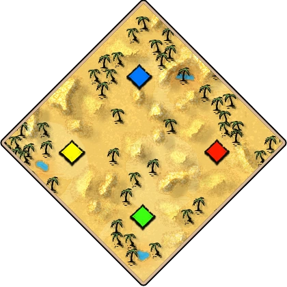
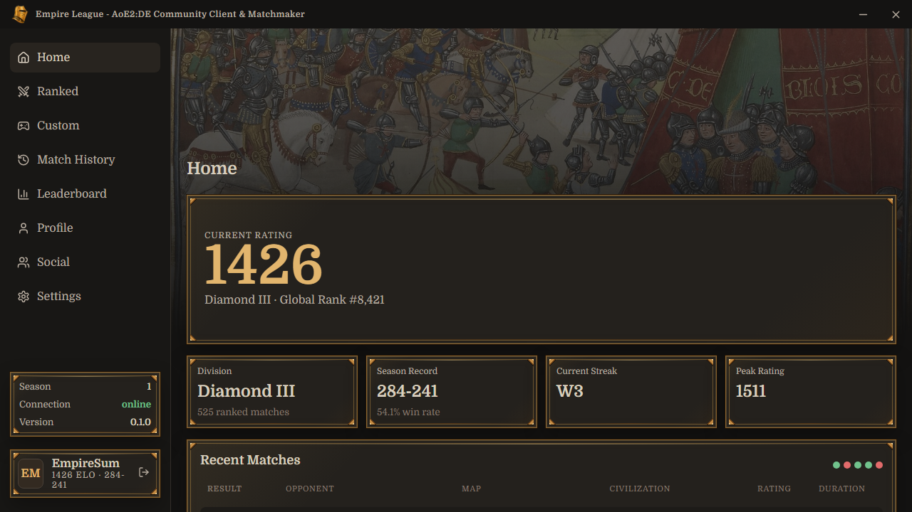
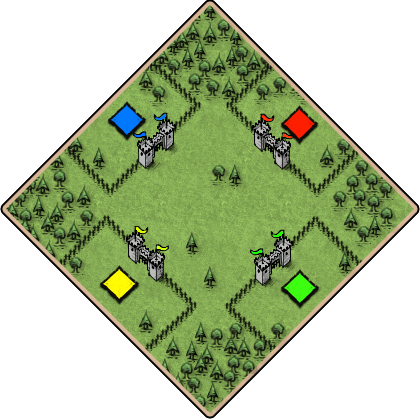
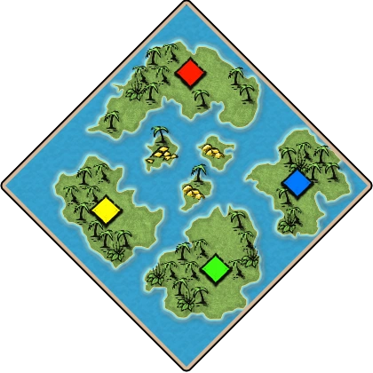

ArabiaOpen land
✓Empire League is a lightweight desktop client and matchmaker for AoE2 with its own map pool, seasonal leaderboards, custom games browser and intricate social features.




Reject matches from accounts using Family Sharing, with additional algorithms and heuristics to guard against smurfing.
Queue with the classic civilization pool through The Mountain Royals, excluding Chinese, Incas, Koreans, and Vietnamese. Compatible civilization picks, Mirror, and Random searches can match together.
At the end of each season, every player's ELO resets to the bottom of their current league. For example, all Grand Masters reset to 2200 ELO and compete for that season's ranking.
Arabia is a ladder-friendly version of KOTD Arabia, Land Nomad is reworked, and more. Opponents automatically receive the map files when they install the app.
Create a tournament and let Empire League handle registration, seeding, lobby setup, result verification, and bracket advancement, removing the usual administrative overhead.
A fully virtualized lobby browser that is less prone to errors and quirks.
Use the Social tab to add friends, send direct messages, and see whether players are in-game, idle, looking for a match, or offline.
Compete in Grand Master, Master, Diamond, Platinum, and other leagues, with further breakdowns into Divisions I, II, and III.
Play a weekly just-for-fun FFA queue featuring community favorites such as CBA, FFA Nomad, and FFA Arena. Players vote on upcoming queues, and the most popular modes are chosen for each rotation.
Ban up to five civilizations. If both players choose random, neither player's banned civilizations can be rolled. You can also set bans by map style, such as Bohemians on Arena-like maps or Mongols on Arabia-like maps.
Tighter matchmaking creates more balanced teams.
Earn honor points by completing matches, then give those points to opponents you find honorable. Points can only be given after ladder games to prevent exploitation, and the most honorable players appear on a leaderboard.
Anyone can create a vote, with the option to limit voting to a specific ELO range.
Queue for open land maps (Arabia-likes), closed land (Arena-likes), water, or any combination. You can also enable or disable individual maps within each category.
Show meBan up to five civilizations when choosing random, with separate ban lists for open and closed maps. Both players’ bans apply.
Set a minimum opponent ELO relative to your own. Anti-smurf checks and optional family-sharing rejection are built into the queue.
League ranks run from Bronze through Grand Master, with Division III, II, and I inside each league.
See who is online, idle, looking for a match, or in-game. Message friends without leaving Empire League.
Add a map or adjust search parameters while queued. Desktop notifications tell you when a match is found.
View ELO progress and match history for both 1v1 and team games inside Empire League.
Show team historyWatch AoE2 YouTube Shorts while searching. More content-creator integrations are planned.
Team RM queues use a tighter rating range when assembling teams.
These features are planned, but are not included in the current build.
Invite friends to custom lobbies or queue together for team games.
League ratings reset to the base rating of each player’s league at the end of a season.
A fully virtualized browser for viewing and joining custom lobbies.
Reward honorable ladder opponents and appear on an honor leaderboard.
Unranked queues for community formats such as FFA Nomad and CBA.
Create proposals and optionally limit voting to a specific ELO range.
Empire League uses your existing account to establish a starting point, then maintains its own rating from matches played on the platform.
Sign in with Steam so Empire League can identify your AoE2 account and game installation.
Your AoE2 account data is used to estimate your initial Empire League rating, so you begin near an appropriate skill level.
After the initial seed, your Empire League rating is updated only by your performance in Empire League matches.
Empire League matches run as private custom games in AoE2. After each match, the app reads the recorded-game data and verifies the reported result before updating player ratings.
Yes. Empire League is 100% free to download and use. It’s an independent, community-driven passion project built by AoE2 players for AoE2 players.
Empire League works alongside AoE2:DE without injecting code or modifying the game in any way that would be against TOS. It installs any necessary mods and maps, launches its own AoE2:DE process, and automates the game’s standard lobby flow to configure a private custom lobby for the matched players. After the match, Empire League servers read the recorded-game data, verify the result, and update ratings for both players.
No. Age of Empires II: Definitive Edition is still required. Empire League handles matchmaking and launches or connects you to matches in the game.
No. Your Empire League rating is kept separate. Winning or losing matches in Empire League does not affect your ranking on the official leaderboards.
When playing random civilizations, each player can ban up to five civilizations. Bans from both players are combined, and separate lists can be configured for open-land and closed-land maps.
Desktop client and matchmaker for Age of Empires II.